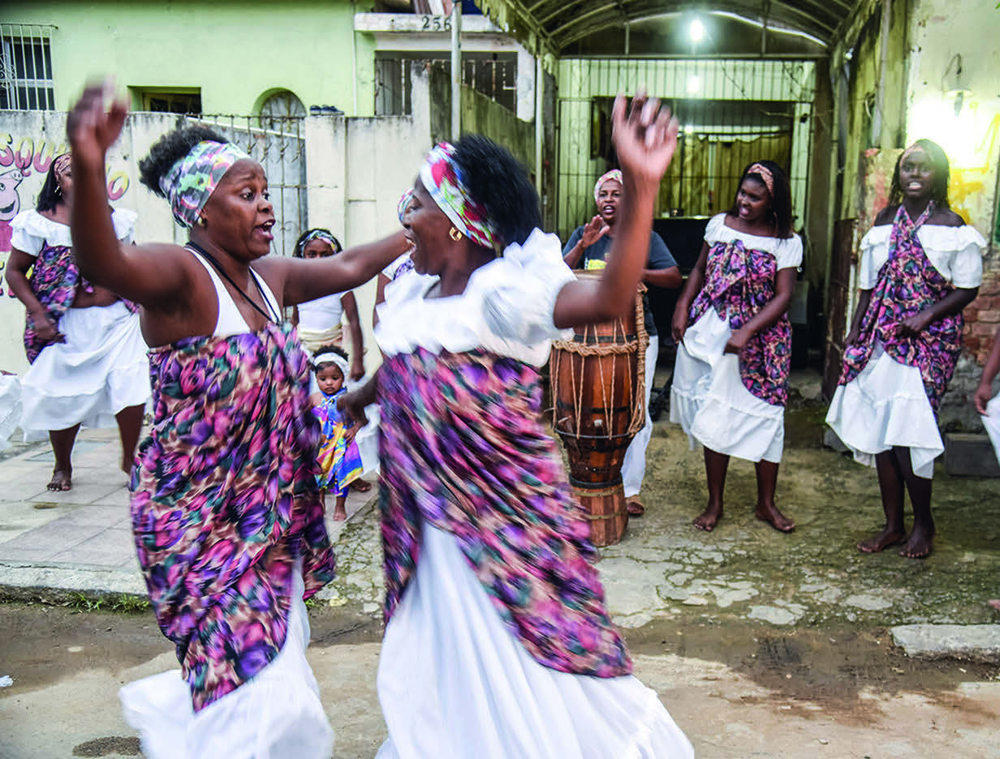

LÍNGUA E SOCIEDADE
PALAVRAS COMO QUIABO, FUBÁ, ANGU, VATAPÁ, ACARAJÉ, CANDOMBLÉ, UMBANDA, CONGADA, UMBIGADA, CAPOEIRA, QUILOMBO, TAMBOR, ATABAQUE, CUÍCA, BERIMBAU SÃO DE ORIGEM AFRICANA.
PODEMOS PERCEBER AS INFLUÊNCIAS AFRICANAS NO VOCABULÁRIO, NA CULINÁRIA, NA MÚSICA, NA DANÇA, NA RELIGIÃO E NAS ARTES.
CONHECER ESSAS CONTRIBUIÇÕES É TAMBÉM RECONHECER A HISTÓRIA DA FORMAÇÃO E IDENTIDADE DO POVO BRASILEIRO.
INICIALMENTE, O JONGO ERA PRATICADO POR POVOS NEGROS ESCRAVIZADOS, NAS LAVOURAS DE CAFÉ E CANA-DE-AÇÚCAR, COMO FORMA DE LAZER E DE RESISTÊNCIA.
DESDE 2005, O JONGO É CONSIDERADO PATRIMÔNIO CULTURAL IMATERIAL BRASILEIRO.
Luciana Whitaker/Pulsar Imagens

Luciana Whitaker/Pulsar Imagens
O JONGO É UMA DANÇA DE ORIGEM AFRICANA QUE UNE PERCUSSÃO, DANÇA E CANTO.
NA IMAGEM, APRESENTAÇÃO DO GRUPO DE JONGO NÚCLEO DE ARTE E CULTURA, DE CAMPOS DOS GOYTACAZES, RIO DE JANEIRO.
FOTOGRAFIA DE 2019.
EM ALGUMAS CULTURAS AFRICANAS, AS HISTÓRIAS SÃO CONTADAS PELOS GRIÔS, PESSOAS MAIS VELHAS QUE PRESERVAM E PASSAM ENSINAMENTOS, VALORIZANDO AS TRADIÇÕES ORAIS DE UM POVO OU DE UMA COMUNIDADE.
COM O PROFESSOR E OS COLEGAS, OUÇA UM CONTO DE ORIGEM AFRICANA, QUE REVELA COSTUMES E TRADIÇÕES DE UM POVO QUE VIVIA ONDE HOJE SE LOCALIZAM O CONGO E A REPÚBLICA DEMOCRÁTICA DO CONGO.
SUGESTÃO PARA O PROFESSOR
O artigo “Jongo e Educação Escolar Quilombola: diálogos no campo do currículo”, de Maroun (2016), tem como objetivo analisar a relação entre o jongo, prática cultural afro-brasileira, e a Educação Escolar Quilombola, buscando demonstrar como a construção das identidades étnicas por meio da inserção na prática do jongo, contribui e legitima a demanda de lideranças políticas pela entrada dessa prática no currículo da escola local.
Disponível em: https://www.scielo.br/j/cp/a/TSCQ8j3k3pXq3V59dWmSXPk/?format=html#, acesso em: 28 maio 2024.